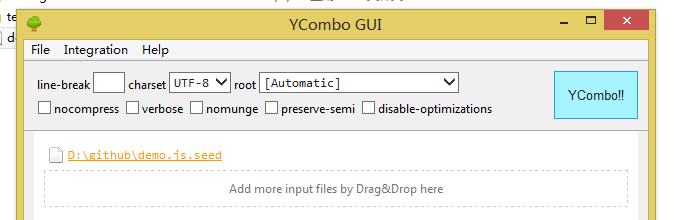

emmet(原zencoding)是前端开发的利器,他的最大作用就是样式或者html结构展开缩写展开缩写:
比如:我们要输入样式出样式display:block;在emmet的辅助下我们只需要输入d:b然后点击展开按键就ok了.
<div class="demo"> <p><a href="#"></a></p> </div>
只需要输入:.demo>p>a 然后按下tab或者展开快捷键就可以了.
在线体验: sallyeidt编辑器集成emmet
进入官网下载: http://docs.emmet.io/
YcomboUI是一个window下图形界面打包css跟js的软件
YcomboUI的打包依赖于配置文件,配置文件为xx.js.seed跟xx.css.seed的形式.我们要做的就是写好配置文件,然后把配置文件拖入软件点击combo.如图所示:

会自动在同名的目录下生成跟配置文件同名的合并后的文件.
配置文件的写法为// #require "files".路径相对于配置文件,例子如下:
/* 组件 */
// #require "moudle/scroll-trigger.js"
// #require "moudle/view-history.js"
/* 插件 */
// #require "plugin/wp-recentcomments/wp-recentcomments-jquery.dev.js"
/* 共用代码 */
// #require "common/social.js"
// #require "common/comments.js"
/* 页面初始化 */
// #require "biz/domready.js"
/* Rating 初始化 */
// #require "common/ratings.js"
文件下载地址: ycombogui
图片合并,文件管理,快速构建起手价.地址: https://github.com/modulejs/modjs
前端集成方案.地址: http://fis.baidu.com/
css精灵,css文件压缩管理.确定是对目录有硬性要求,地址: http://www.99css.com/archives/542
css编译器,其实我个人更加喜欢sass一些.介绍地址: http://www.lesscss.net/
编译软件: winless
非常非常非常非常强大的编辑器,丰富的插件系统,具体请百度
不得不说这个编辑器才是最强大的起前端开发利器,各种方便,各种顺心,唯一不满的地方就是代码提醒没有自动选中有点小遗憾
UltraMon 分屏开发
http://placekitten.com/ 小猫占位,生成各种可爱的小猫占位图
http://placehold.it/各种大小标注的占位图
https://github.com/iazrael/ispriter 这工具真心不错.基于nodejs的安装之前首先要npm 下pngjs的库.迄今最好用的背景图合并工具
expandrive 硬盘挂载工具,可以跟操作本地磁盘一样操作ftp上的内容.挺方便的.